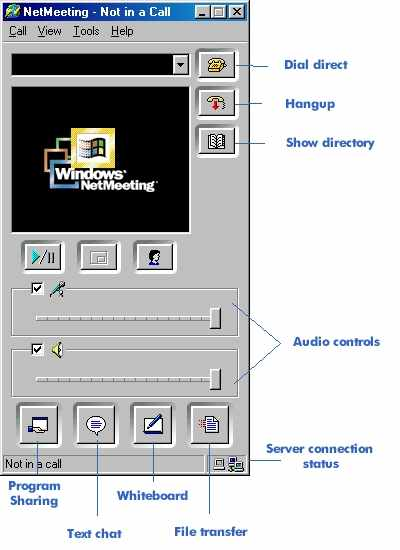
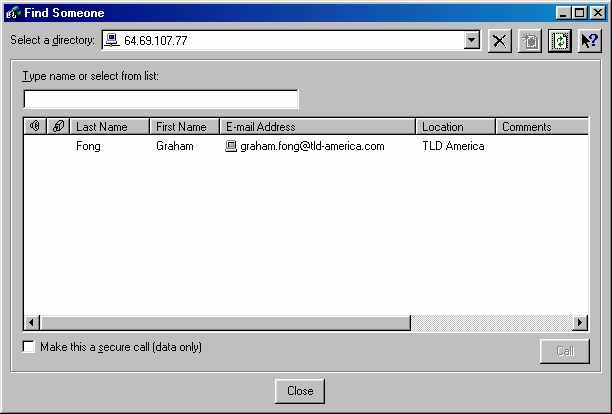

|
|
1. If you don't already have Netmeeting installed, download it from http://www.microsoft.com/netmeeting and install it first. 2. The first time you run Netmeeting it will go through setup, follow the instructions. When it asks for a "Directory" delete the default server and type "earth" for TLD America personnel and "svr-web" for TLD Europe personnel. Select "Log on to directory when Netmeeting starts". 3. After setup, open Netmeeting if it's not open. You will see the following screen. If the "Server connection status" shows a red hour glass then it is trying to log onto the TLD Netmeeting Directory. Once logged on it will show one blue and one green screened computers.  Figure 1., Main Netmeeting Screen 4. Once logged on click the "Show directory button". A dialog box will open listing everyone who is logged onto the TLD Netmeeting Directory Server. Make sure "Select a directory" shows "64.69.107.77", if it doesn't highlight it and change it.  5. To make a call to a person, highlight their name in the list; the previously greyed out "Call" button will become active. Press the "Call" button to connect. 6. For detailed instructions click here. 7. If you have any problems please contact me. |